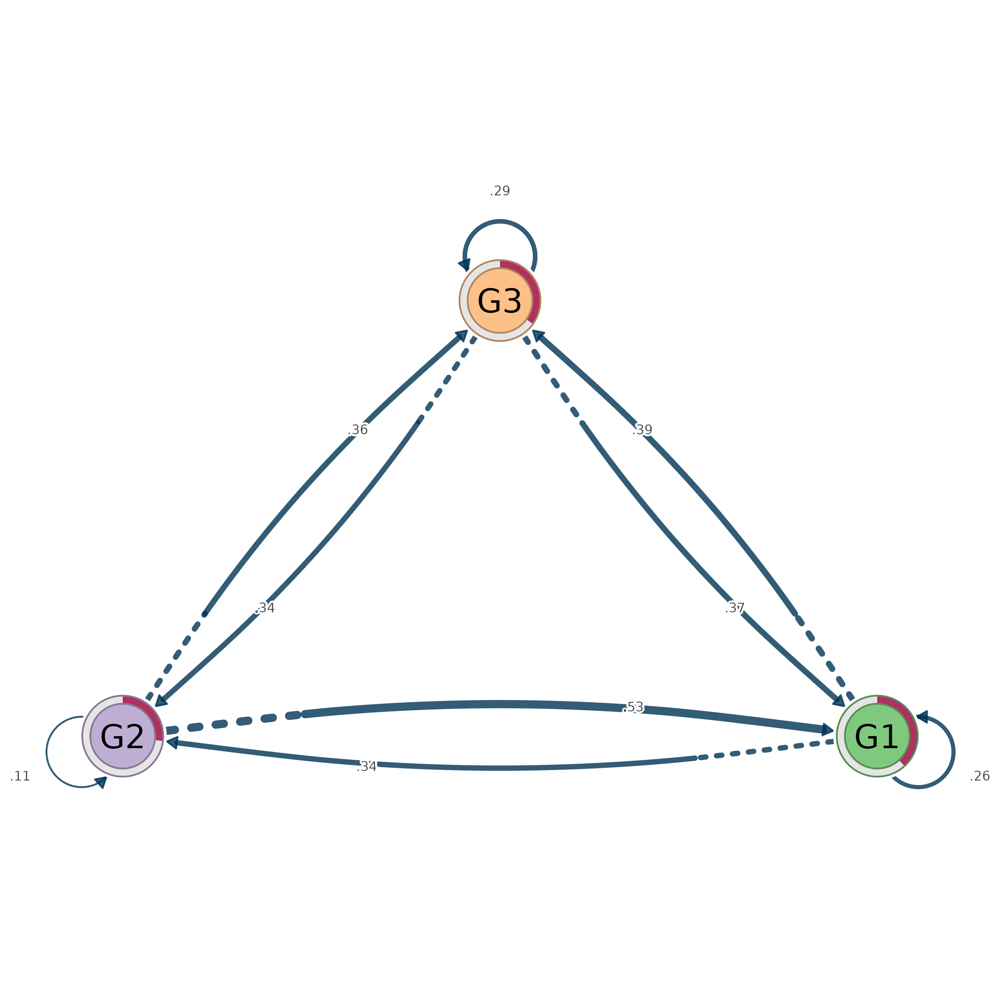

Converts a cluster_summary object to proper tna objects that can be
used with all functions from the tna package. Creates a macro (cluster-level)
tna model and per-cluster tna models (internal transitions within each
cluster), returned as a flat group_tna object.
Usage
as_tna(x)
# S3 method for class 'cluster_summary'
as_tna(x)
# S3 method for class 'mcml'
as_tna(x)
# Default S3 method
as_tna(x)Arguments
- x
A
cluster_summaryobject created bycluster_summary. The cluster_summary should typically be created withtype = "tna"to ensure row-normalized transition probabilities. If created withtype = "raw", the raw counts will be passed totna::tna()which will normalize them.
Value
A group_tna object (S3 class) – a flat named list of tna
objects. The first element is named "macro" and represents the
cluster-level transitions. Subsequent elements are named by cluster name
and represent internal transitions within each cluster.
- macro
A tna object representing cluster-level transitions. Contains
$weights(k x k transition matrix),$inits(initial distribution), and$labels(cluster names). Use this for analyzing how learners/entities move between high-level groups or phases.- <cluster_name>
Per-cluster tna objects, one per cluster. Each tna object represents internal transitions within that cluster. Contains
$weights(n_i x n_i matrix),$inits(initial distribution), and$labels(node labels). Clusters with single nodes or zero-row nodes are excluded (tna requires positive row sums).
A group_tna object (flat list of tna objects: macro + per-cluster).
A group_tna object (flat list of tna objects: macro + per-cluster).
A tna object constructed from the input.
Details
This is the final step in the MCML workflow, enabling full integration with the tna package for centrality analysis, bootstrap validation, permutation tests, and visualization.
Requirements
The tna package must be installed. If not available, the function throws an error with installation instructions.
Workflow
# Full MCML workflow
net <- cograph(edges, nodes = nodes)
net$nodes$clusters <- group_assignments
cs <- cluster_summary(net, type = "tna")
tna_models <- as_tna(cs)
# Now use tna package functions
plot(tna_models$macro)
tna::centralities(tna_models$macro)
tna::bootstrap(tna_models$macro, iter = 1000)
# Analyze per-cluster patterns
plot(tna_models$ClusterA)
tna::centralities(tna_models$ClusterA)See also
cluster_summary to create the input object,
plot_mcml for visualization without conversion,
tna::tna for the underlying tna constructor
Examples
mat <- matrix(runif(36), 6, 6); diag(mat) <- 0
rownames(mat) <- colnames(mat) <- LETTERS[1:6]
clusters <- list(G1 = c("A","B"), G2 = c("C","D"), G3 = c("E","F"))
cs <- cluster_summary(mat, clusters, type = "tna")
tna_models <- as_tna(cs)
names(tna_models) # "macro", "G1", "G2", "G3"
#> [1] "macro" "G1" "G2" "G3"
splot(tna_models$macro) # cograph renderer avoids tna's plot deps
